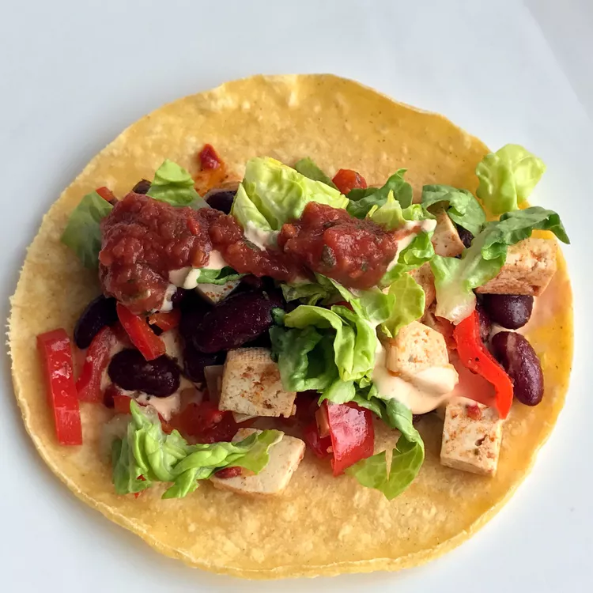

Tofu Tacos

Description:
A great tofu taco recipe for a meatless meal. This recipe is sure to satisfy even the pickiest meat eaters at your table!
Ingredients:
- 1 (16 ounce) package garden herb tofu, crumbled
- 2 tablespoons vegetable oil
- 1 clove garlic, minced
- 1/2 clove garlic, minced
- 2 teaspoons chili powder
- 1/4 teaspoon paprika
- 1/4 teaspoon cayenne peppe
- 1/4 teaspoon ground cumin
- 1/4 teaspoon salt
- 1/2 lime, juiced
- 1/2 cup tomato sauce
- 1/4 cup chopped fresh cilantro
- 8 medium taco shells, heated
- 2 cups shredded lettuce
- 2 tomatoes, chopped
- 1 avocado - peeled, pitted and diced
- 1 cup shredded Cheddar cheese
- 1/4 cup salsa
Steps:
- Cook tofu, oil, garlic, and onion in a large skillet over medium heat for 5 minutes. Add chili powder, paprika, cayenne, cumin, salt, lime juice, and tomato sauce to the skillet and stir. Cook for 3 minutes.
- Stir in cilantro. Spoon mixture into a bowl.
- Spoon tofu mixture into taco shells. Top the mixture with lettuce, tomatoes, avocado, cheese, and salsa.